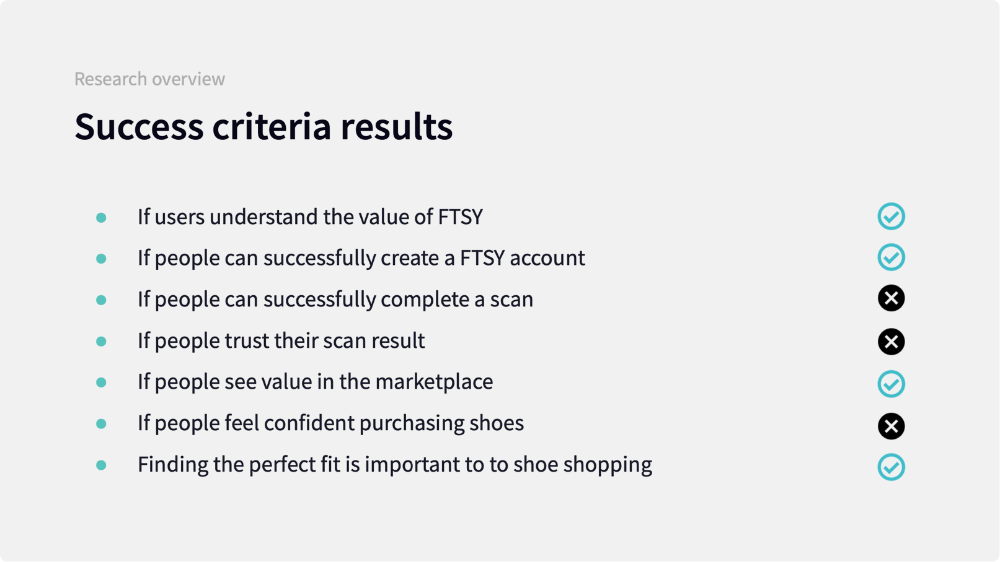

FTSY UX/UI design
As an independent contractor, I worked with an agency to redesign an iOS app that uses AI technology to help people find and purchase the perfect fitting shoes.

As an independent contractor, I worked with an agency to redesign an iOS app that uses AI technology to help people find and purchase the perfect fitting shoes.
Redefining the way shoes are purchased online.
With online shoe shopping comes a lot of uncertainty. Even though you know your shoe size, different brands and shoe types always fit differently. This is the purpose of FTSY, an app that helps you find new brands and unique styles in the right size by matching your foot size to the perfect shoes. What's unique about FTSY is the interactive scanning experience that determines the size of your feet in order to make shoe recommendations.
Working as an independent contractor, I paired up with an agency for this project. We worked closely with the FTSY team who approached us to redesign the app which was experiencing slow adoption.
Discovery: Understanding the problems with the existing app
My first priority was to understand how potential FTSY users went about shopping for shoes online. I conducted 5 user testing sessions where I got each person to try the FTSY app while getting insights into what a great shopping experience looked liked for each of them. I moderated each testing session in person and compiled the results into a report outlining key findings and recommendations.

Make the foot scanning process simple and intuitive. Provide confidence in the results.
FTSY’s scanning technology is the heart of the app. The AI-driven mobile scanner builds a 3D model by taking multiple photos of shoppers feet. Photos are turned into accurate foot models where the shape impacts how a foot will feel in a shoe.
All 5 participants failed to perform a foot scan on their own. Each time I heard the same thing: "It's too much work and I need instructions while doing it." The app provided instructions before the scan, but there was not enough guidance or feedback during the process. Every person found it too complex.
4 out of 5 of the test participants also felt that they weren't confident with the app suggesting a size. They doubted its accuracy and weren't fully confident purchasing if the suggested size was different to their regular size.
With this in mind, I designed a scanning experience that is much faster and easier to use by focusing on clear step-by-step instructions and a better sense of progress.

Help customers feel more confident in making a purchase by providing sizing reassurance and more details about the products.
The testing sessions uncovered a general lack of confidence in using the app to make a purchase. This led me to focus on the product pages where there was a lack of information to help make an informed purchase.
I made the images larger, showed the available colours and price more prominently and made the product descriptions easier to find. I made sure that the sizing was more prominent and provided personalized information to explain why this size was being suggested. I also changed the colour and copy of the purchase button because test participants were hesitant about what the next step would be.
Redefining the browsing and onboarding experience of the app.
5 out of 5 test participants revealed that they wanted to jump straight in and browse for shoes. Instead the app forced them through a bloated onboarding process where they had to create an account and scan their feet first.
This led to changing the structure of the app and removing parts of the onboarding flow that caused so much confusion. Instead, the new design allowed users to freely browse all the shoes as soon as possible before they needed to scan their feet and enter any account details. At the same time, there was always a subtle reminder to make sure that users perform the core function of the app - to scan their feet for the right size.